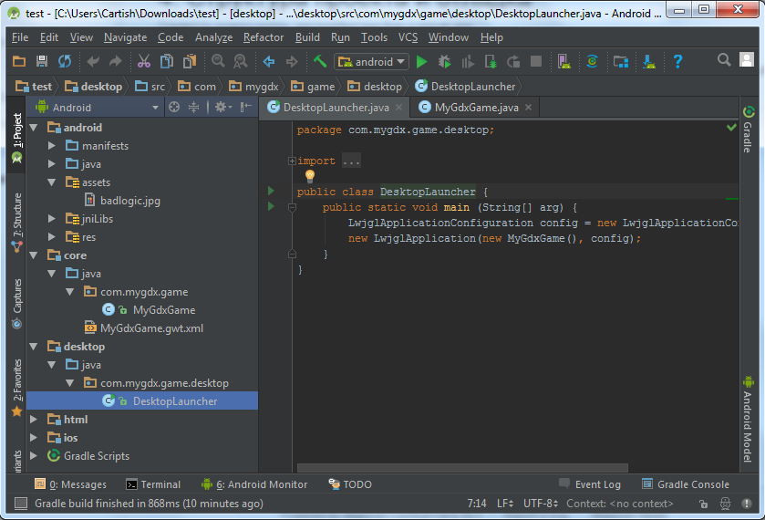
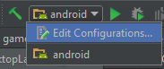
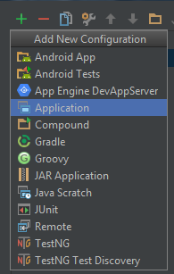
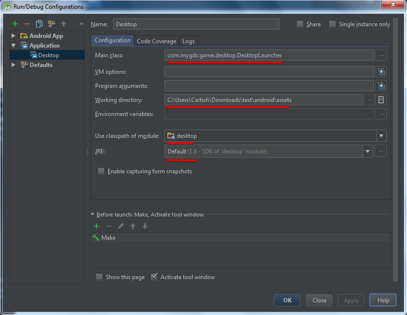
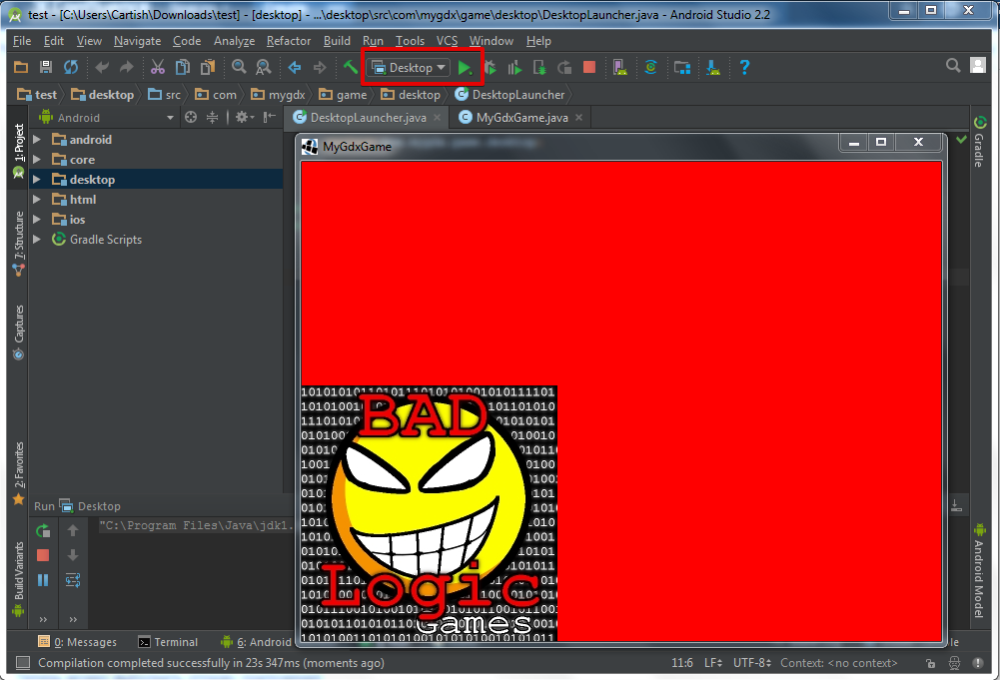

1) Структура проекта. Проект состоит из нескольких папок:
Папка android - содержит файл создания приложения, ресурсы и папку assats. Именно в эту папку будут складываться все ассеты в игре.
Папка desktop - содержит файл создания приложения.
Папка html - содержит файл создания приложения.
Папка ios - содержит файл создания приложения.
Папка core - основная папка в которой содержится программный код всего приложения.

2) Отладка приложения.
Для того чтобы отладить приложение под desktop необходимо сделать соответствующие настройки.
Откройте окно Edit Configurations.

Добавить приложение

Необходимо указать наименование, файл запуска приложения, папку расположения ассетов, основной класс.

JRE - может быть не настроен, в таком случае откроется окно в котором необходимо указать путь к JDK.
Нажимаем Apply и OK
Теперь можно выполнить отладку приложения. Если всё сделано верно откроется окно с логотипом.

Created with the Personal Edition of HelpNDoc: Easily create Web Help sites